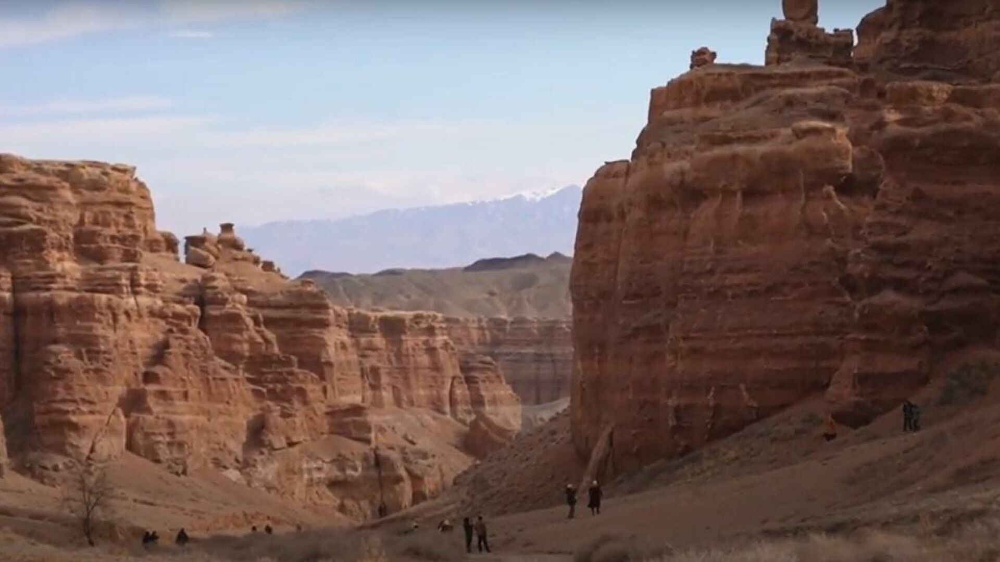
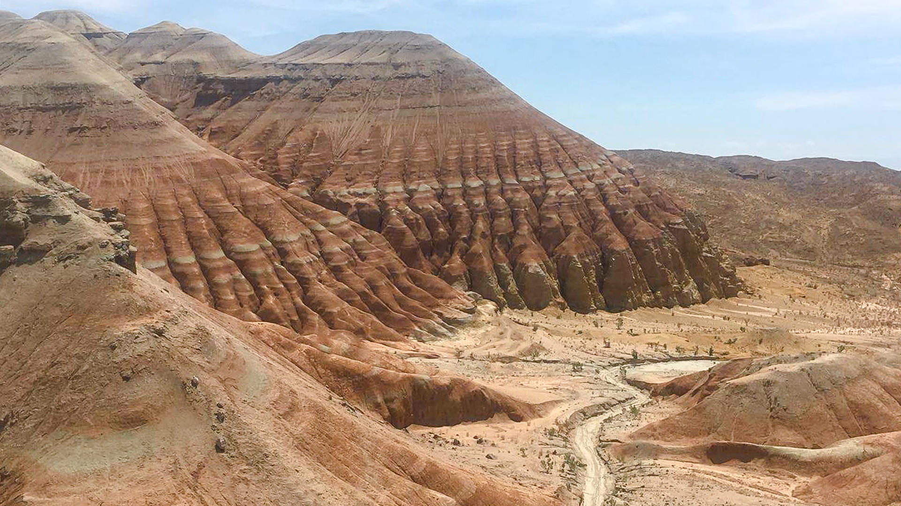
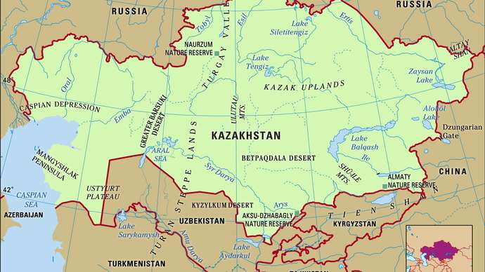

Borovoe (kaz. Burabai koli) is one of the lakes of the same name group in the north of Kazakhstan in the Burabai district of Akmola region, in the eastern part of the Kokchetav upland. The lake belongs to the Ishim water basin. It is part of the group of Kokshetau lakes.
The water is clear, the bottom is clearly visible. The water surface of the lake is mostly open, only along the western and north-western coasts there are thickets of reeds and reeds. The bottom is flat, with a slope to the north, sandy and rocky near the coast, muddy in the middle.
The lake has several small bays. In the northwestern bay is the rocky island of Zhumbaktas ("Sphinx"), which has the shape of a mushroom and rises 20 m above the water. On the shore of this bay is the mountain Okzhetpes (literally "the arrow will not reach", another unofficial name "Elephant") with a height of about 300 m. The southern, western and northern shores are granite, sometimes rising above the water in the form of cliffs. The eastern shore is sandy, sloping; near the water's edge stretches a sand shaft 2-5 m wide, 1.5 m high.
The lake is located on the territory of the State National Natural Park "Burabay".

Charyn Canyon
Charyn Canyon (kaz. Sharyn shatkaly) is a canyon stretching for 154 km along the Charyn River in Kazakhstan. The canyon is located 195 km east of the city of Almaty, near the border with China. It is located on the territory of three districts of Almaty region: Uygur, Rayymbek, Enbekshikazakh. The canyon is part of the Charyn National Park, established on February 23, 2004.
History
Charyn Canyon is a natural monument composed of sedimentary rocks, the age of which is about 12 million years. The height of the canyon 's sheer mountains reaches 150-300 m .
According to Professor P. I. Marikovsky, the canyon was formed about 25 million years ago in the tertiary period, when there was a large lake at this place. The slopes are formed both as a result of the processes of rock destruction (denudation) and as a result of rock deposition (marls are white calcareous rocks).

Altyn-Emel
"Altyn-Emel" (kaz. "Altynemel" memlekettik ulttyk tabigi Park) is a state national natural park in the Ili River valley on the territory of the Almaty region of Kazakhstan. It occupies an area bounded on the south by the Ili River and the Kapshagai reservoir, on the north by the western spurs of the Dzungarian Alatau - the Sholak, Matai Altynemel and Koyandytau mountains, on the east by the low Aktau mountains. The name of the ridge comes from the name of the main pass through it, translated from the Turkic-Mongolian Altynemel — "golden saddle" ("altyn" - gold and "emel" — saddle).
Territory
The park "Altyn-Emel" was organized on April 10, 1996 with an area of 209,553 hectares on the territories of the former: Kapchagai State Hunting and Conservation Farm, Almaty State Reserve, nursery for semi-voluntary keeping of animals (kulanarium), collective agricultural enterprise "Baschi". The purpose of the park is to preserve unique natural complexes, rare, endangered and especially valuable species of flora and fauna[1].
The total area of the park is currently 307,653.35 thousand hectares.
Relief
Lowlands make up one-third of Kazakhstan’s huge expanse, hilly plateaus and plains account for nearly half, and low mountainous regions about one-fifth. Kazakhstan’s highest point, Mount Khan-Tengri (Han-t’eng-ko-li Peak) at 22,949 feet (6,995 metres), in the Tien Shan range on the border between Kazakhstan, Kyrgyzstan, and China, contrasts with the flat or rolling terrain of most of the republic. The western and southwestern parts of the republic are dominated by the low-lying Caspian Depression, which at its lowest point lies some 95 feet below sea level. South of the Caspian Depression are the Ustyurt Plateau and the Tupqaraghan (formerly Mangyshlak) Peninsula jutting into the Caspian Sea. Vast amounts of sand form the Greater Barsuki and Aral Karakum deserts near the Aral Sea, the broad Betpaqdala Desert of the interior, and the Muyunkum and Kyzylkum deserts in the south. Most of these desert regions support slight vegetative cover fed by subterranean groundwater.

Drainage
Kazakhstan’s east and southeast possess extensive watercourses: most of the country’s 7,000 streams form part of the inland drainage systems of the Aral and Caspian seas and Lakes Balkhash and Tengiz. The major exceptions are the great Irtysh, Ishim (Esil), and Tobol rivers, which run northwest from the highlands in the southeast and, crossing Russia, ultimately drain into Arctic waters. In the west the major stream, the Ural (Kazakh: Zhayyq) River, flows into the Caspian Sea. In the south the waters of the once-mighty Syr Darya have, since the late 1970s, scarcely reached the Aral Sea at all.